File: 000210.gt.txt (if the image is defective, simply delete all Arabic text and the line will be excluded)
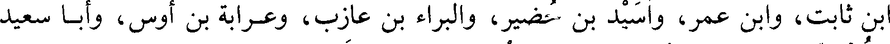
ابن ثابت، وابن عمر، وأسيد بن حضير، والبراء بن عازب، وعرابة بن أوس، وأبا سعيد
File: 000211.gt.txt (if the image is defective, simply delete all Arabic text and the line will be excluded)
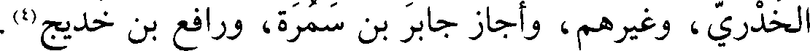
الخدري، وغيرهم، وأجاز جابر بن سمرة، ورافع بن خديج(4).
File: 000212.gt.txt (if the image is defective, simply delete all Arabic text and the line will be excluded)
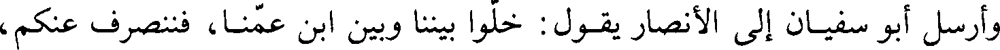
وأرسل أبو سفيان إلى الأنصار يقول: خلوا بيننا وبين ابن عمنا، فننصرف عنكم،
File: 000213.gt.txt (if the image is defective, simply delete all Arabic text and the line will be excluded)
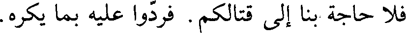
فلا حاجة لنا إلى قتالكم. فردوا عليه بما يكره.
File: 000214.gt.txt (if the image is defective, simply delete all Arabic text and the line will be excluded)
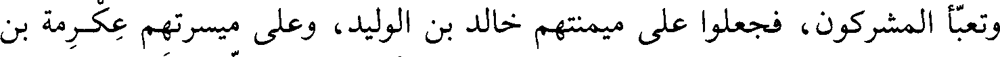
وتعبى المشركون، فجعلوا على ميمنتهم خالد بن الوليد، وعلى ميسرتهم عكرمة بن
File: 000215.gt.txt (if the image is defective, simply delete all Arabic text and the line will be excluded)
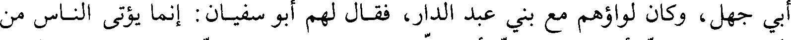
أبي جهل، وكان لواؤهم مع بني عبد الدار، فقال لهم أبو سفيان: إنما يؤتى الناس من
File: 000216.gt.txt (if the image is defective, simply delete all Arabic text and the line will be excluded)
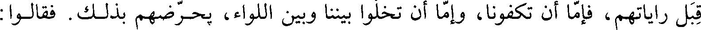
قبل راياتهم، فإما أن تكفونا، وإما أن تخلوا بيننا وبين اللواء، يحرضهم بذلك. فقالوا
File: 000217.gt.txt (if the image is defective, simply delete all Arabic text and the line will be excluded)
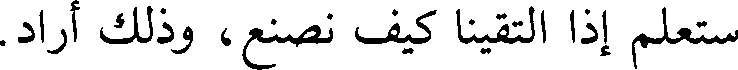
ستعلم إذا التقينا كيف نصنع، وذلك أراد.
File: 000218.gt.txt (if the image is defective, simply delete all Arabic text and the line will be excluded)
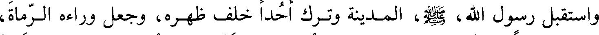
واستقبل رسول الله، صلى الله عليه وآله وسلم، المدينة وترك أحدا خلف ظهره، وجعل وراءه الرماة،
File: 000219.gt.txt (if the image is defective, simply delete all Arabic text and the line will be excluded)
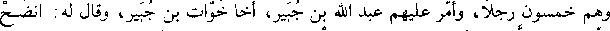
وهم خمسون رجلا، وأمر عليهم عبد الله بن جبير، أخا خوات بن جبير، وقال له: انضح
File: 000220.gt.txt (if the image is defective, simply delete all Arabic text and the line will be excluded)
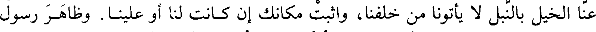
عنا الخيل بالنبل لا يأتونا من خلفنا، إن كانت لنا أو علينا. وظاهر رسول
File: 000221.gt.txt (if the image is defective, simply delete all Arabic text and the line will be excluded)
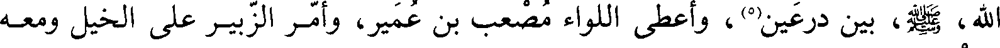
الله، صلى الله عليه وآله وسلم، بين درعين(5)، وأعطى اللواء مصعب بن عمير، وأمر الزبير على الخيل ومعه
File: 000222.gt.txt (if the image is defective, simply delete all Arabic text and the line will be excluded)
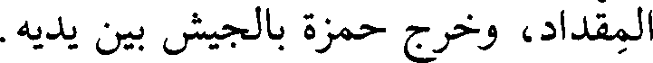
المقداد، وخرج حمزة بالجيش بين يديه.
File: 000223.gt.txt (if the image is defective, simply delete all Arabic text and the line will be excluded)
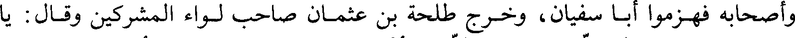
وأصحابه فهزموا أبا سفيان، وخرج طلحة بن عثمان صاحب لواء المشركين وقال: يا
File: 000224.gt.txt (if the image is defective, simply delete all Arabic text and the line will be excluded)
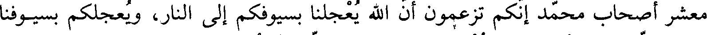
معشر أصحاب محمد إنكم تزعمون أن الله يعجلنا بسيوفكم إلى النار، ويعجلكم بسيوفنا
File: 000225.gt.txt (if the image is defective, simply delete all Arabic text and the line will be excluded)
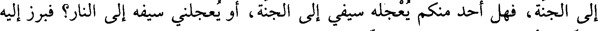
إلى الجنة، فهل أحد منكم يعجله سيفي إلى الجنة، أو يعجلني سيفه إلى النار؟ فبرز إليه
File: 000226.gt.txt (if the image is defective, simply delete all Arabic text and the line will be excluded)
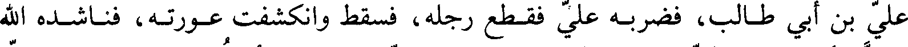
علي بن أبي طالب، فضربه علي فقط رجله، فسقط وانكشفت عورته، فناشده الله
File: 000227.gt.txt (if the image is defective, simply delete all Arabic text and the line will be excluded)
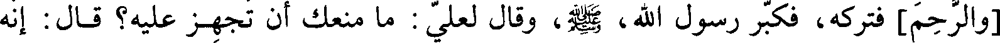
والرحم] فتركه، فكبر رسول الله، صلى الله عليه وآله وسلم، وقال لعلي: ما منعك أن تجهز عليه؟ قال: إنه
File: 000228.gt.txt (if the image is defective, simply delete all Arabic text and the line will be excluded)
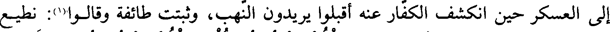
إلى العسكر حين انكشف الكفار عنه أقبلوا يريدون النهب، وثبتت طائفة وقالوا(1): نطيع
File: 000229.gt.txt (if the image is defective, simply delete all Arabic text and the line will be excluded)
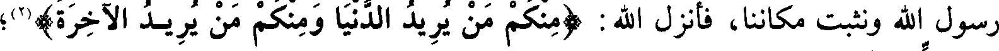
رسول الله ونثبت مكاننا، فأنزل الله : (منكم من يريد الدنيا ومنكم من يريد الآخرة)(2)؛
File: 000230.gt.txt (if the image is defective, simply delete all Arabic text and the line will be excluded)
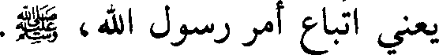
يعني اتباع أمر رسول الله، صلى الله عليه وآله وسلم.
File: 000231.gt.txt (if the image is defective, simply delete all Arabic text and the line will be excluded)
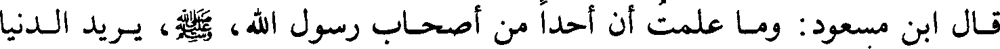
قال ابن مسعود: وما علمت أن أحدا من أصحاب رسول الله، صلى الله عليه وآله وسلم، يريد الدنيا
File: 000232.gt.txt (if the image is defective, simply delete all Arabic text and the line will be excluded)
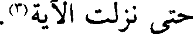
حتى نزلت الآية(3).
File: 000233.gt.txt (if the image is defective, simply delete all Arabic text and the line will be excluded)
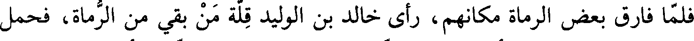
فلما فارق بعض الرماة مكانهم، رأى خالد بن الوليد قلة من بقي من الرماة، فحمل
File: 000234.gt.txt (if the image is defective, simply delete all Arabic text and the line will be excluded)
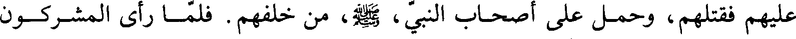
عليهم فقتلهم، وحمل على أصحاب النبي، صلي الله عليه و سلم، من خلفهم. فلما رأى المشركون
File: 000235.gt.txt (if the image is defective, simply delete all Arabic text and the line will be excluded)
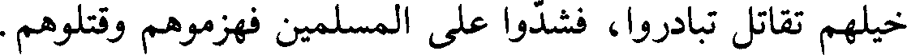
خيلهم تقاتل تبادروا، فشدوا على المسلمين فهزموهم وقتلوهم.
File: 000236.gt.txt (if the image is defective, simply delete all Arabic text and the line will be excluded)
وقد كان المسلمون قتلوا أصحاب اللواء، فبقي مطروحا لا يدنو منه أحد، فأخذته
File: 000237.gt.txt (if the image is defective, simply delete all Arabic text and the line will be excluded)
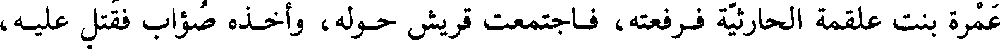
عمرة بنت علقمة الحارثية فرفعته، فاجتمعت قريش حوله، وأخذه صواب فقتل عليه،
File: 000238.gt.txt (if the image is defective, simply delete all Arabic text and the line will be excluded)
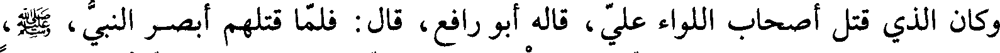
وكان الذي قتل أصحاب اللواء علي، قاله أبو رافع، قال: فلما قتلهم أبصر النبي، صلى الله عليه وآله وسلم،
File: 000239.gt.txt (if the image is defective, simply delete all Arabic text and the line will be excluded)
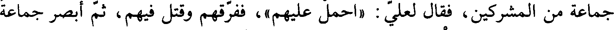
جماعة من المشركين، فقال لعلي: (احمل عليهم)، ففرقهم وقتل فيهم، ثم أبصر جماعة
To Save: `Ctrl+s`, make sure to choose `Webpage, complete`!